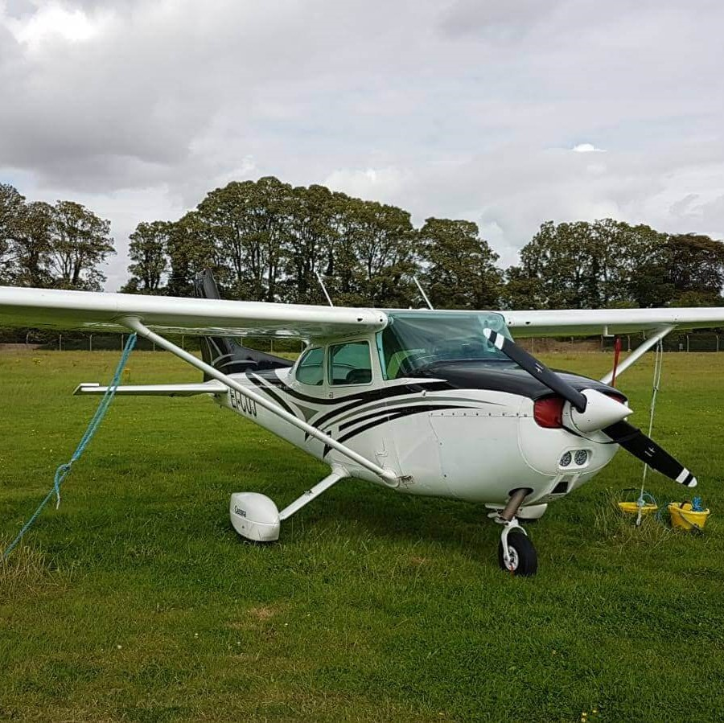
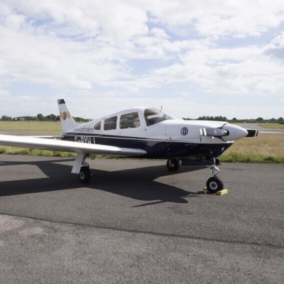

Most popular Traing Aircrafts
Cessna-152
The Cessna 152 is an American two-seat, fixed-tricycle-gear, general aviation airplane, used primarily
for flight training and personal use. It was based on the earlier Cessna 150 incorporating a number of
minor design changes and a slightly more powerful engine with a longer time between overhaul.
The Cessna 152 has been out of production for more than thirty years, but many are still airworthy and
are still in regular use for flight training.
General characteristics
- Crew: one
- Capacity: one passenger (plus two children not exceeding 120 lb (54 kg) on optional baggage
compartment bench seat)
- Length: 24 ft 1 in (7.34 m)
- Wingspan: 33 ft 4 in (10.16 m)
- Height: 8 ft 6 in (2.59 m)
- Wing area: 160 sq ft (15 m2)
- Empty weight: 1,081 lb (490 kg)
- Gross weight: 1,670 lb (757 kg)
- Powerplant: 1 * Lycoming O-235-L2C flat-4 engine, 110 hp (82 kW)
- Propellers: 2-bladed fixed pitch, 69-inch (180 cm) McCauley or 72-inch Sensenich propeller
Performance
- Maximum speed: 126 mph (203 km/h, 109 kn)
- Cruise speed: 123 mph (198 km/h, 107 kn)
- Stall speed: 49 mph (79 km/h, 43 kn) (power off, flaps down)
- Range: 477 mi (768 km, 415 nmi)
- Ferry range: 795 mi (1,279 km, 691 nmi) with long-range tanks
- Service ceiling: 14,700 ft (4,500 m)
- Rate of climb: 715 ft/min (3.63 m/s)
Cessna-172

The Cessna 172 Skyhawk is an American four-seat, single-engine, high wing, fixed-wing aircraft made by
the Cessna Aircraft Company.[2] First flown in 1955,[2] more 172s have been built than any other
aircraft.[3] It was developed from the 1948 Cessna 170 but with tricycle landing gear rather than
conventional landing gear. The Skyhawk name was originally used for a trim package, but was later
applied to all standard-production 172 aircraft
General characteristics
- Crew: one
- Capacity: three passengers
- Length: 27 ft 2 in (8.28 m)
- Wingspan: 36 ft 1 in (11.00 m)
- Height: 8 ft 11 in (2.72 m)
- Wing area: 174 sq ft (16.2 m2)
- Aspect ratio: 7.32
- Airfoil: modified NACA 2412
- Empty weight: 1,691 lb (767 kg)
- Gross weight: 2,450 lb (1,111 kg)
- Fuel capacity: 56 US gallons (212 litres)
- Powerplant: 1 * Lycoming IO-360-L2A four cylinder, horizontally opposed aircraft engine, 160 hp (120
kW)
- Propellers: 2-bladed metal, fixed pitch
Performance
- Cruise speed: 122 kn (140 mph, 226 km/h)
- Stall speed: 47 kn (54 mph, 87 km/h) (power off, flaps down)[85]
- Never exceed speed: 163 kn (188 mph, 302 km/h) (IAS)[8]
- Range: 696 nmi (801 mi, 1,289 km) with 45 minute reserve, 55% power, at 12,000 ft
- Service ceiling: 13,500 ft (4,100 m)
- Rate of climb: 721 ft/min (3.66 m/s)
- Wing loading: 14.1 lb/sq ft (68.6 kg/m2)
Piper-28

The Piper PA-28 Cherokee is a family of two-seat or four-seat light aircraft built by Piper Aircraft and
designed for flight training, air taxi and personal use.[2] The PA-28 family of aircraft comprises
all-metal, unpressurized, single-engined, piston-powered airplanes with low-mounted wings and tricycle
landing gear. They have a single door on the right side, which is entered by stepping on the wing.
General characteristics
- Crew: one
- Capacity: three passengers
- Length: 23 ft 3.6 in (7.102 m)
- Wingspan: 30 ft 0 in (9.14 m)
- Height: 7 ft 3.6 in (2.225 m)
- Wing area: 160 sq ft (15 m2)
- Aspect ratio: 7.32
- Airfoil: NACA 652-415[56]
- Empty weight: 1,201 lb (545 kg)
- Gross weight: 2,150 lb (975 kg)
- Max takeoff weight: 2,150 lb (975 kg)
- Powerplant: 1 * Lycoming O-320-E2A 4-cylinder air-cooled horizontally-opposed piston engine, 150 hp
(110 kW)
- Propellers: Sensenich M74DM
Performance
- Maximum speed: 123 kn (142 mph, 228 km/h)
- Cruise speed: 108 kn (124 mph, 200 km/h)
- Stall speed: 47 kn (54 mph, 87 km/h)
- Range: 465 nmi (535 mi, 861 km)
- Service ceiling: 14,300 ft (4,400 m)
- Rate of climb: 660 ft/min (3.4 m/s)
- Wing loading: 13.4 lb/sq ft (65 kg/m2)
- Power/mass: 0.0699 hp/lb (0.1149 kW/kg)